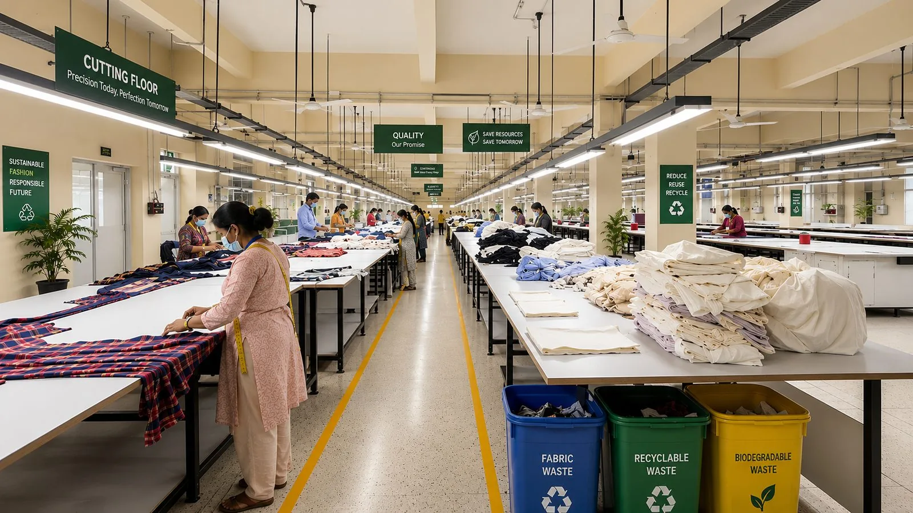
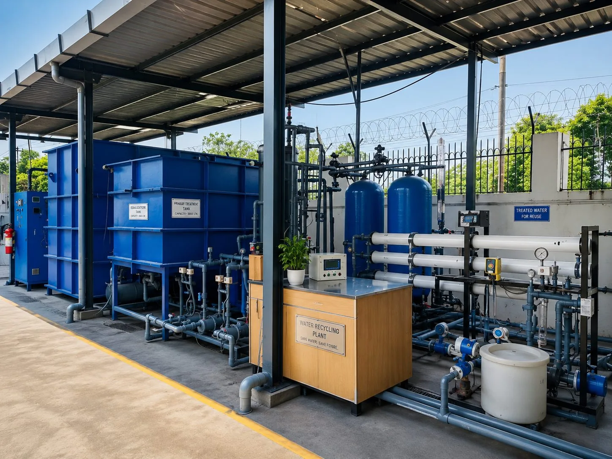
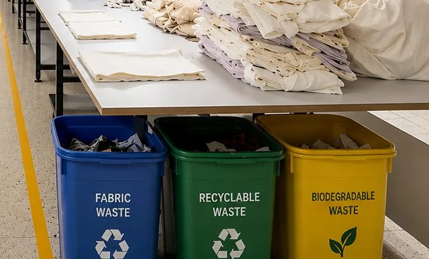
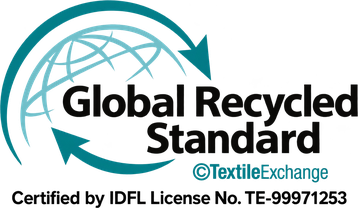
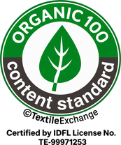
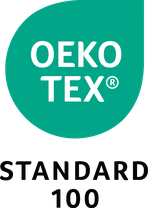
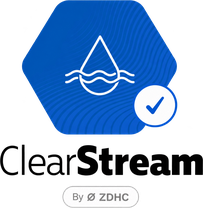

Energy
1 MW of rooftop solar
1 MW of installed capacity following the latest expansion, generating 524,221 kWh in 2025. Solar contribution has risen from 25% to 35% of consumption.
Rooftop array, B1 unit
20 independent certifications and verifications govern how we source materials, manage chemicals, treat wastewater and look after the people who make our garments. Each one is audited by a third party — not self-declared.

Cutting floor, Gurgaon — waste is segregated at source into fabric, recyclable and biodegradable streams.
Measured, audited and reported — not estimated. Figures are 2025–26 unless stated.
1 MW of installed capacity following the latest expansion, generating 524,221 kWh in 2025. Solar contribution has risen from 25% to 35% of consumption.
Rooftop array, B1 unit

269,550 litres of water recycled year-to-date in 2026, with 30% of process water recycled and returned for reuse. The recycling plant is currently installed at one of our units; two more follow by 2029.
At our first manufacturing facility (unit A-1-4)

Segregated at source into fabric, recyclable and biodegradable streams. All fabric and plastic waste is sent for recycling and reuse — diverting 99% from landfill.
All cotton is sourced as Better Cotton, organic or US cotton. The majority of our polyester is recycled. Viscose and modal are traceable through the TextileGenesis platform.
Every factory is SLCP verified with an Outstanding rating, recognised by leading US brands, and carries Higg FEM verification averaging above 89%.
All chemicals comply with ZDHC MRSL Level 3, and wastewater test results achieve 100% compliance with ZDHC requirements.
Four commitments, each with a number and a year. Measured against the figures above, not against a baseline we have chosen to flatter ourselves.
Up from 35% today, and from 25% before the latest solar expansion.
Up from roughly 90% today. The remainder is governed by specific buyer requirements, so 100% is not achievable.
Doubling today's 30% by extending the recycling plant to two further factories.
Our net-zero target year for Scope 1 and 2 emissions: the fuel we burn on site and the electricity we buy.
Every standard below is verified by a third party, not self-declared. Certificate numbers, validity dates and the unit each covers are listed in full.
One file: a summary index of every certificate followed by each one in full, bookmarked by group. Built for dropping straight into a supplier audit file.
Global Organic Textile Standard — certifies that organic textile products are processed to strict environmental and social standards, from raw material to finished product.

Global Recycled Standard — verifies recycled content and promotes responsible environmental, social and chemical management throughout production.

Organic Content Standard — verifies the use and traceability of organic materials in our products.

Recycled Claim Standard — confirms recycled content and ensures recycled materials are traceable through the supply chain.
Chain of Custody, Textiles 2.0 — supports regenerative farming that improves soil health, protects natural resources and promotes responsible cotton production.
Membership across four units, held since July 2025 — giving verified, more sustainable US cotton with supply-chain transparency.
All our cotton is sourced as Better Cotton, organic or US cotton — promoting more sustainable farming and better livelihoods for farmers.
Viscose and modal are traceable through the TextileGenesis platform, giving fibre-to-retail visibility on man-made cellulosics.

Tested for harmful substances and safe for human use, including products for babies and young children. Held separately for five units.
Woven and knitted garments in cotton, viscose, polyester, linen and their blends, including accessories.
Woven and knitted garments in cotton, viscose, polyester, linen and their blends, including accessories.
Woven and knitted garments in cotton, viscose, polyester, linen and their blends, including accessories.
Woven and knitted garments in cotton, viscose, polyester, linen and their blends, including accessories.
Chemical inventory verified against the ZDHC Manufacturing Restricted Substances List, with conformance reported across MRSL Levels 1 to 3.

Wastewater tested through approved laboratories against ZDHC Wastewater Guideline 2.2.

Facility Environmental Module — verified measurement of energy, water, waste, chemicals and emissions.

Reimagining Industry to Support Equality. Delivered with Kshitij, the programme builds financial literacy among workers, with certificates awarded on completion.

Regular shop-floor sessions on production planning, method development and quality — part of how we keep average tenure above 22 years among department heads.

Tree planting across our facilities. The 2026 theme — "Inspired by nature. For climate. For our future."